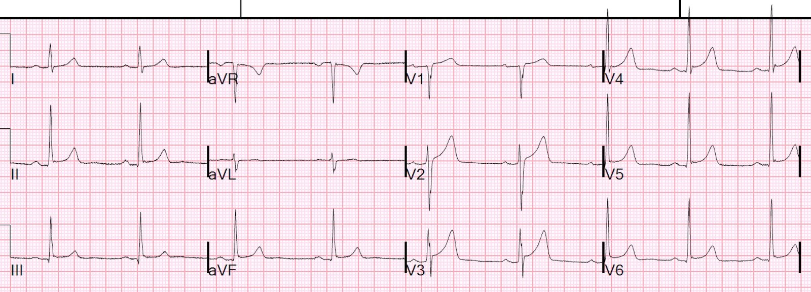
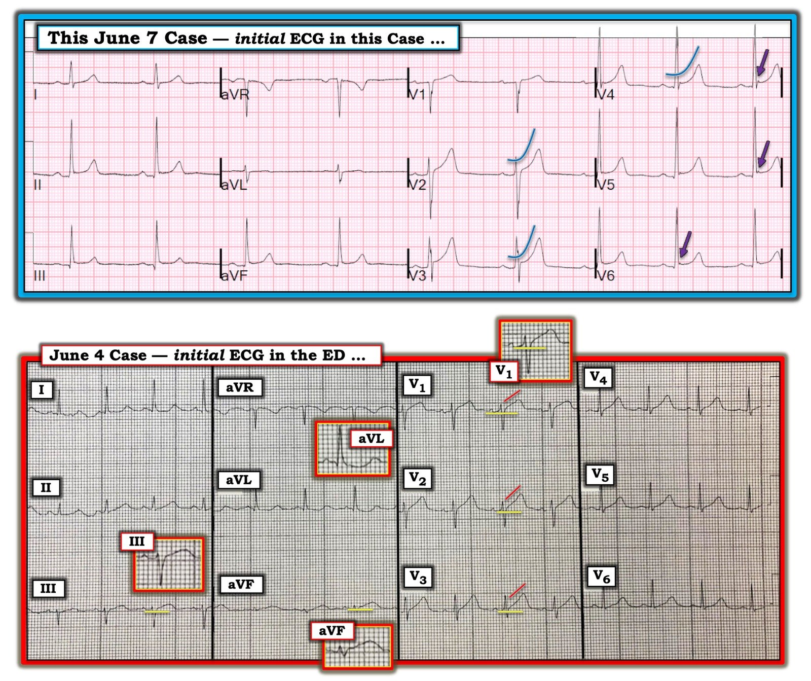

07/06/2019 — Bệnh nhân 60 mấy tuổi bị ngất
Bản dịch tiếng Việt của bài "A 60-something with syncope" – Dr. Smith’s ECG Blog. Giữ nguyên toàn bộ 4 hình ảnh của bản gốc.
Nhân viên cấp cứu ngoài viện được gọi đến vì bệnh nhân đột ngột mất ý thức (LOC) rồi tỉnh lại, có vợ/chồng của ông chứng kiến.
Họ thấy bệnh nhân trông có vẻ bệnh nặng.
Họ đã ghi một điện tâm đồ trước viện; bản ghi này không có ở đây nhưng trông giống điện tâm đồ tại khoa cấp cứu (ED).
Dựa trên điện tâm đồ trước viện đó, họ đã kích hoạt phòng thông tim (cath lab):


Khi đến viện, bệnh nhân trông khỏe và không có triệu chứng, đã hồi phục hoàn toàn. Vì vậy triệu chứng ở đây là ngất. (chỉ khi một người đã hồi phục hoàn toàn thì mới có thể gọi là “ngất”).
Đánh giá ngất tại khoa cấp cứu: sau khi hỏi bệnh sử, tiền sử và khám (H and P), điện tâm đồ là xét nghiệm duy nhất cần làm cho mọi bệnh nhân…..
Điện tâm đồ:
ST chênh lên ở II, III, aVF, V2-V4, và V5, V6. Không có ST chênh xuống soi gương ở aVL.
Nếu bệnh nhân có đau ngực, nhiều người sẽ chẩn đoán viêm màng ngoài tim.
Nhưng đây là một điện tâm đồ hoàn toàn bình thường. ST chênh lên ở đây là bình thường.
Tôi không biết về tình trạng lâm sàng của bệnh nhân, nhưng được cho xem điện tâm đồ này và tôi nói: “điện tâm đồ này không phải là chỉ định để đưa vào phòng thông tim. Các bạn nên hủy kích hoạt, trừ khi có một lý do lâm sàng thuyết phục nào đó để làm.”
Kích hoạt phòng thông tim là một quyết định lâm sàng, và nếu bạn nghĩ bệnh nhân bị OMI, thì bạn nên làm vậy “bất kể các dấu hiệu trên điện tâm đồ hay dấu ấn sinh học” (hướng dẫn NSTEMI của châu Âu).
Nhưng việc kích hoạt phòng thông tim không nên dựa trên điện tâm đồ này. Nó bình thường. (Tất nhiên OMI vẫn có thể hiện diện ngay cả khi điện tâm đồ bình thường).
Ngất mà không có triệu chứng nào khác rất hiếm khi do OMI.
Bệnh nhân được đưa vào phòng thông tim và các động mạch vành đều thông. Ông được loại trừ nhồi máu cơ tim và được chẩn đoán ngất do phản xạ phế vị (vasovagal).

===================================
Bình luận của KEN GRAUER, MD (7/6/2019):
===================================
Thật tốt khi xen lẫn các bản ghi bình thường giữa rất nhiều ca điện tâm đồ OMI tinh tế thường được trình bày trên Blog này. Nhận ra thế nào là một “bản ghi bình thường” ở một bệnh nhân gọi đội cấp cứu ngoài viện (EMS) có thể cũng thách thức không kém việc phát hiện các dấu hiệu sớm của OMI cấp:
- ĐIỂM #1 — “Điểm xuất phát” của tôi luôn là Bệnh sử. Là bác sĩ điều trị chính (Attending) chịu trách nhiệm đọc lại tất cả điện tâm đồ cho 35 người hành nghề y tại một phòng khám ngoại trú trong suốt 30 năm — tôi nhận thấy việc biết bệnh sử là sự trợ giúp vô giá để dự đoán khả năng những bản ghi trông bất thường trong “hộp thư đến” (In-Box) trên bàn làm việc của tôi có thể là cấp tính hay nhiều khả năng không có thay đổi cấp tính.
- Mặc dù hiển nhiên là tỷ lệ hiện mắc thiếu máu cục bộ cấp rõ ràng cao hơn nhiều đối với các điện tâm đồ do EMS ghi tại hiện trường hoặc từ những bệnh nhân có triệu chứng đến ED (so với một cơ sở chăm sóc ngoại trú) — cần nhấn mạnh rằng bệnh sử trong ca này là một cơn ngất, và không phải là một bệnh nhân có đau ngực mới xuất hiện! Mặc dù việc không có đau ngực rõ ràng không loại trừ khả năng OMI cấp — nó có làm giảm tỷ lệ phát hiện thiếu máu cục bộ cấp ở loại bệnh nhân này.
Với hy vọng bổ sung cho các bình luận ở trên của Dr. Smith về lý do tại sao điện tâm đồ trong ca này không gợi ý OMI cấp (và tại sao không cần kích hoạt phòng thông tim cấp dựa trên điện tâm đồ này) — tôi nghĩ sẽ hữu ích nếu so sánh bản ghi ngày 7 tháng Sáu này với điện tâm đồ ban đầu tại ED lấy từ ca bệnh trước đây của chúng tôi ngày 4 tháng Sáu (Hình 1).


===================
SUY NGHĨ CỦA TÔI về Điện tâm đồ ngày 7 tháng Sáu: Như Dr. Smith đã nêu — có ST chênh lên nhẹ-nhưng-thật ở nhiều chuyển đạo (các chuyển đạo II, III, aVF; V2-đến-V6).
- Hình dạng của đoạn ST chênh lên này đồng loạt là dạng lõm (concave-up) ở mỗi chuyển đạo trong 8 chuyển đạo này (tương tự hình dạng của các đường màu xanh cong nhẹ nhàng ở các chuyển đạo V2, V3, V4). Mặc dù bản thân hình dạng này không loại trừ khả năng thiếu máu cục bộ cấp — kiểu hình dạng đoạn ST này, khi đi kèm với mức ST chênh lên không nhiều hơn lượng nhỏ mà chúng ta thấy ở đây + khía điểm J (các mũi tên TÍM ở V4, V5, V6) — thường liên quan với các biến thể tái cực hơn nhiều so với thiếu máu cục bộ cấp.
Những đặc điểm khác chống lại khả năng bản ghi TRÊN ở Hình 1 thể hiện thiếu máu cục bộ cấp bao gồm:
- Không có bất kỳ ST chênh xuống soi gương nào (như Dr. Smith đã nhấn mạnh).
- Tăng tiến sóng R hoàn toàn bình thường.
- Tất cả các sóng q thấy trên bản ghi này đều nhỏ và hẹp. Sóng q “vách” bình thường (do vectơ khởi đầu bình thường từ trái sang phải của quá trình khử cực vách) thường có thể thấy ở bất kỳ chuyển đạo bên nào (ở đây thấy ở các chuyển đạo V4,V5,V6). Sóng q “vách” bình thường cũng có thể thấy ở một hoặc nhiều chuyển đạo thành dưới khi trục mặt phẳng trán tương đối đứng, như ở đây.
- Không có tính Khu trú! Lưu ý rằng ST chênh lên được mô tả trên bản ghi TRÊN ở Hình 1 này thấy ở nhiều vùng chuyển đạo (tức là ở các chuyển đạo thành dưới, thành trước, và các chuyển đạo ngực bên). Bệnh tim thiếu máu cục bộ cấp có khả năng khu trú cao hơn nhiều — thay vì biểu hiện hình ảnh ST-T gần như giống hệt nhau như chúng ta thấy ở đây trong 8 trên 12 chuyển đạo của bản ghi này.
LƯU Ý: Không đặc điểm điện tâm đồ nào mà tôi mô tả là hoàn hảo — và, có thể cần đánh giá thêm (tức là thêm bệnh sử; các bản ghi liên tiếp; siêu âm tim khẩn (Stat Echo); troponin, v.v.) trước khi có thể hoàn toàn yên tâm rằng không có biến cố thiếu máu cục bộ cấp nào đang diễn ra — nhưng, các đặc điểm mô tả ở trên khi xét cùng nhau — kết hợp với một bệnh sử không có đau ngực — gợi ý mạnh mẽ rằng không có chỉ định kích hoạt phòng thông tim cấp dựa trên bản ghi TRÊN ở Hình 1!
====================
So sánh với Ca bệnh ngày 4 tháng Sáu: Tôi nghĩ việc so sánh giữa điện tâm đồ trong ca ngày 7 tháng Sáu này — và điện tâm đồ ban đầu ghi được trong Ca bệnh ngày 4 tháng Sáu giải thích tốt hơn lời nói về lý do tại sao tôi ngay lập tức lo ngại về bản ghi DƯỚI (ngày 4 tháng Sáu) ở Hình 1, nhưng không lo ngại về bản ghi TRÊN (ngày 7 tháng Sáu).
- Bệnh sử của Ca bệnh ngày 4 tháng Sáu là đau ngực mới khởi phát và dữ dội. Không có bệnh sử đau ngực ở bệnh nhân trong Ca bệnh ngày 7 tháng Sáu.
- Như đã giải thích chi tiết trong Bình luận của tôi về Ca bệnh ngày 4 tháng Sáu — có một số chuyển đạo trong ca ngày 4 tháng Sáu này cho thấy các bất thường ST-T chắc chắn và cấp tính. Xét theo tỷ lệ (tức là so với biên độ QRS) — mức ST chênh lên ở chuyển đạo aVF trên bản ghi ngày 4 tháng Sáu là rất rõ rệt ( = khoảng 50% biên độ của phức bộ QRS rất nhỏ ở chuyển đạo này). Hãy lưu ý sóng T ở chuyển đạo aVF “đầy đặn” như thế nào ở đỉnh của nó — và, đáy sóng T ở chuyển đạo này rộng như thế nào. Hình ảnh ST-T tương tự (dù kém rõ hơn) ở chuyển đạo III + ST chênh xuống soi gương ở chuyển đạo aVL trong ca ngày 4 tháng Sáu xác nhận tính cấp tính của sóng ST-T tối cấp ở chuyển đạo aVF. Ngược lại — không chuyển đạo nào trong 8 chuyển đạo có ST chênh lên trên bản ghi TRÊN (ngày 7 tháng Sáu) biểu hiện đỉnh sóng T đầy đặn hơn dự kiến hay đáy sóng T rộng hơn dự kiến.
- Hãy lưu ý sự thẳng đuỗn của nhánh lên của sóng ST-T ở các chuyển đạo V1, V2 và V3 của Ca bệnh ngày 4 tháng Sáu (các đường ĐỎ song song ở những chuyển đạo này). Như vậy, độ lõm dốc lên bình thường của đoạn ST đã bị mất! Như đã giải thích trong Bình luận của tôi về Ca bệnh ngày 4 tháng Sáu — ST chênh lên rõ ràng bất thường ở chuyển đạo V1 (điều đơn giản là không thấy ở một điện tâm đồ bình thường) xác nhận rằng sự thẳng đuỗn đoạn ST này ở các chuyển đạo V1, V2 và V3 là một dấu hiệu thật-và-cấp tính.
SUY NGHĨ CUỐI CÙNG: Việc nhận ra các bất thường ST-T có hình dạng bất thường trong bối cảnh đánh giá tất cả 12 chuyển đạo trên một điện tâm đồ không thể chia nhỏ thành các con số. Người thầy thuốc đơn giản là cần trải nghiệm hàng nghìn điện tâm đồ theo thời gian, với sự đánh giá cẩn thận và theo dõi tỉ mỉ để biết bản ghi nào hóa ra là cấp tính, và bản ghi nào không. Ngay cả khi đó — không ai trong chúng ta hoàn hảo trong việc diễn giải. Dù vậy, chú ý đến các đặc điểm so sánh trên các điện tâm đồ ngày 4 và ngày 7 tháng Sáu như mô tả ở trên sẽ hỗ trợ hữu ích cho quá trình này.
- Chúng tôi xin CẢM ƠN Dr. Smith đã trình bày ca bệnh này.